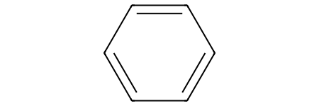
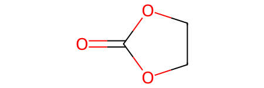

Lab 4: Descriptors for Molecules and Materials#
This notebook is intended to introduce the use of molecular and materials descriptors to obtain features for machine learning.
We will cover the use of RDKit to generate molecular descriptors, and Matminer and Dscrib to generate materials descriptors.
Installation#
To install
RDKitfollow the instructions hereTo install
Matminerfollow the instructions hereTo install
Dscribefollow the instructions here
Optional
For visualization of the crystals in Jupyter Notebook, install crystal-toolkit
RDKit#
Create molecules#
# Smiles string of a molecule
benzene_smi = "c1ccccc1"
# Rdkit molecule
from rdkit import Chem
benzene = Chem.MolFromSmiles(benzene_smi)
benzene

EC_smi = "C1COC(=O)O1"
EC = Chem.MolFromSmiles(EC_smi)
EC

Morgan/Circular/ECFP fingerprints#
from rdkit.Chem import AllChem
# Create generator
morgan_generator = AllChem.GetMorganGenerator(radius=2)
# Generate the Morgan fingerprint
morgan_fp = morgan_generator.GetFingerprint(EC)
# Convert the fingerprint to a binary string
fp_binary = morgan_fp.ToBitString()
print("Fingerprint length:", len(fp_binary))
print("First five bits:", fp_binary[:5])
Fingerprint length: 2048
First five bits: 00000
Crystal composition & structure#
from pymatgen.core import Structure
filename = "./data/NaCl.POSCAR"
NaCl = Structure.from_file(filename)
print(NaCl)
Full Formula (Na4 Cl4)
Reduced Formula: NaCl
abc : 5.588126 5.588126 5.588126
angles: 90.000000 90.000000 90.000000
pbc : True True True
Sites (8)
# SP a b c
--- ---- --- --- ---
0 Na 0 0 0
1 Na 0 0.5 0.5
2 Na 0.5 0 0.5
3 Na 0.5 0.5 0
4 Cl 0 0 0.5
5 Cl 0 0.5 0
6 Cl 0.5 0 0
7 Cl 0.5 0.5 0.5
NaCl_comp = NaCl.composition
NaCl_comp
Composition('Na4 Cl4')
Visualize it#
import crystal_toolkit
NaCl
No module named 'phonopy'
/opt/hostedtoolcache/Python/3.10.13/x64/lib/python3.10/site-packages/tqdm/auto.py:21: TqdmWarning: IProgress not found. Please update jupyter and ipywidgets. See https://ipywidgets.readthedocs.io/en/stable/user_install.html
from .autonotebook import tqdm as notebook_tqdm
Matminer#
Compositional descriptor#
from matminer.featurizers.composition import ElementProperty
ep = ElementProperty.from_preset(preset_name="magpie")
features = ep.featurize(NaCl_comp)
# Length of the feature vector
len(features)
132
# First 5 features
features[:5]
[11.0, 17.0, 6.0, 14.0, 3.0]
# What are these features?
labels = ep.feature_labels()
labels[:5]
['MagpieData minimum Number',
'MagpieData maximum Number',
'MagpieData range Number',
'MagpieData mean Number',
'MagpieData avg_dev Number']
Structure descriptor#
from matminer.featurizers.structure import RadialDistributionFunction
cutoff = 20
rdf = RadialDistributionFunction(cutoff=cutoff)
features = rdf.featurize(NaCl)
len(features)
200
features.shape
(200,)
import matplotlib.pyplot as plt
import numpy as np
fig, ax = plt.subplots()
X = np.arange(0, cutoff, cutoff/len(features))
Y = features
ax.plot(X, Y)
ax.set_xlabel(r"Distance $(\mathrm{\AA})$")
ax.set_ylabel("Radial distribution function")
Text(0, 0.5, 'Radial distribution function')
Crystal composition & structure#
ASE (an alternative to pymatgen)
from ase.io import read
NaCl = read("./data/NaCl.POSCAR")
NaCl
Atoms(symbols='Na4Cl4', pbc=True, cell=[[5.588126435439935, 0.0, 3e-16], [9e-16, 5.588126435439935, 3e-16], [0.0, 0.0, 5.588126435439935]])
from ase.visualize import view
view(NaCl, viewer='x3d')
SOAP Descriptor#
from dscribe.descriptors import SOAP
soap = SOAP(r_cut=5, n_max=8, l_max=6, species=["Na", "Cl"], periodic=True)
features = soap.create(NaCl)
# The shape is (n_atoms, n_features)
features.shape
(8, 952)
# The first 10 features for the first atom
features[0][:10]
array([ 0.01150823, 0.05439198, 0.08569168, 0.30573843, 0.00483586,
0.906287 , -1.43857222, 2.26457369, 0.25707581, 0.40500933])